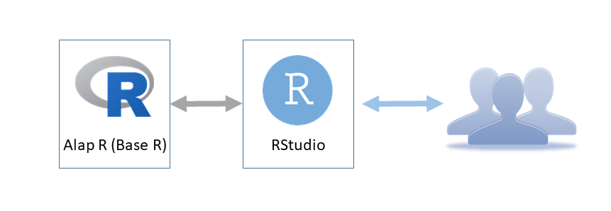
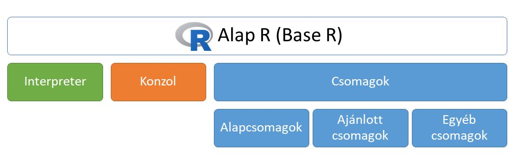
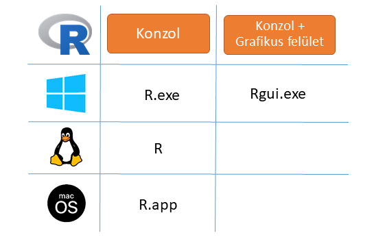
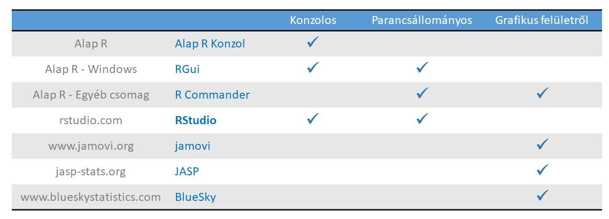

Chapter 13 Képek beszúrása

Az R kényelmes használata
Figure 13.1: Az R kényelmes használata
Figure 13.2: Az R kényelmes használata

Figure 13.3: Az Alap R

Figure 13.4: A konzolok

Figure 13.5: Az R használati módjai

Figure 13.6: Az RMarkdown működése
smoc2_rawcounts <- read.csv("data/fibrosis_smoc2_rawcounts_unordered.csv")
rownames(smoc2_rawcounts) <- smoc2_rawcounts$X
smoc2_rawcounts$X <- NULL
# Explore the first six observations of smoc2_rawcounts
head(smoc2_rawcounts)
#> smoc2_fibrosis1 smoc2_fibrosis4
#> ENSMUSG00000102693 0 0
#> ENSMUSG00000064842 0 0
#> ENSMUSG00000051951 72 30
#> ENSMUSG00000102851 0 0
#> ENSMUSG00000103377 0 0
#> ENSMUSG00000104017 0 0
#> smoc2_normal1 smoc2_normal3
#> ENSMUSG00000102693 0 0
#> ENSMUSG00000064842 0 0
#> ENSMUSG00000051951 0 3
#> ENSMUSG00000102851 0 0
#> ENSMUSG00000103377 1 0
#> ENSMUSG00000104017 0 0
#> smoc2_fibrosis3 smoc2_normal4
#> ENSMUSG00000102693 0 0
#> ENSMUSG00000064842 0 0
#> ENSMUSG00000051951 36 1
#> ENSMUSG00000102851 0 0
#> ENSMUSG00000103377 0 0
#> ENSMUSG00000104017 0 0
#> smoc2_fibrosis2
#> ENSMUSG00000102693 0
#> ENSMUSG00000064842 0
#> ENSMUSG00000051951 51
#> ENSMUSG00000102851 0
#> ENSMUSG00000103377 0
#> ENSMUSG00000104017 0
# Explore the structure of smoc2_rawcounts
str(smoc2_rawcounts)
#> 'data.frame': 47729 obs. of 7 variables:
#> $ smoc2_fibrosis1: int 0 0 72 0 0 0 0 0 0 1 ...
#> $ smoc2_fibrosis4: int 0 0 30 0 0 0 0 0 0 1 ...
#> $ smoc2_normal1 : int 0 0 0 0 1 0 0 0 0 1 ...
#> $ smoc2_normal3 : int 0 0 3 0 0 0 0 0 0 0 ...
#> $ smoc2_fibrosis3: int 0 0 36 0 0 0 0 0 0 1 ...
#> $ smoc2_normal4 : int 0 0 1 0 0 0 0 0 0 0 ...
#> $ smoc2_fibrosis2: int 0 0 51 0 0 0 0 0 0 1 ...